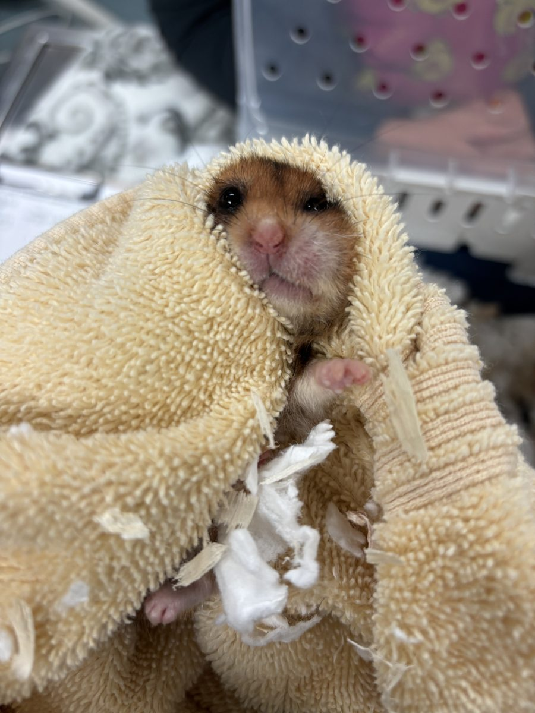
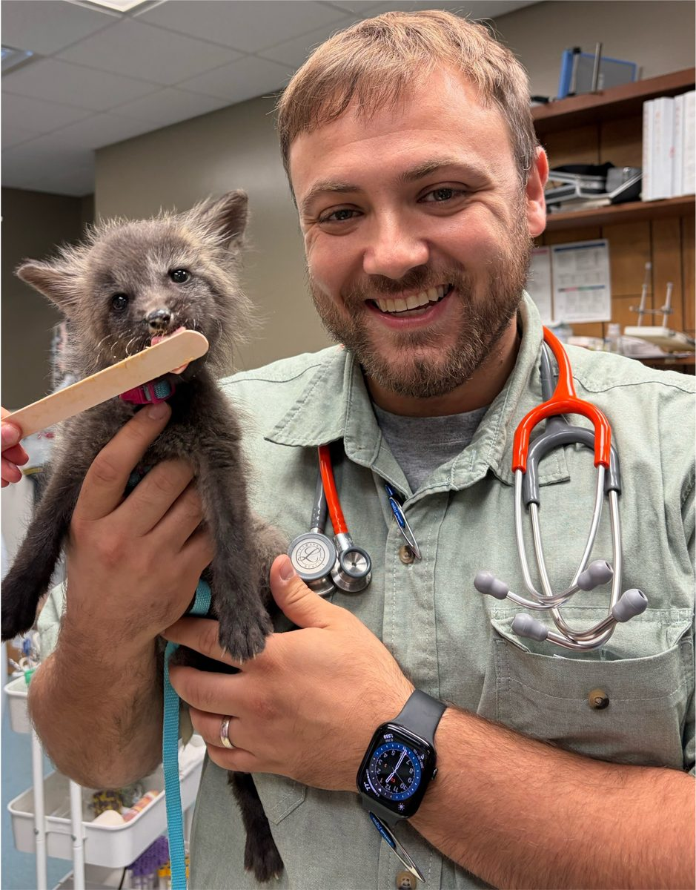

Dr. Logan Kopp is Nashville's exotic companion mammal specialist. Along with rabbits, ferrets, and guinea pigs, he sees most other companion mammals at Priest Lake Veterinary Hospital in Antioch, including degus, hamsters, gerbils, and even servals. Families come from Franklin, Murfreesboro, Nolensville, and across Middle Tennessee.
Many families start with one of these:
We see degus, hamsters, gerbils, and servals here too. Privately owned, legally kept foxes, squirrels, raccoons, skunks, and some other non-domestic mammals can be seen by appointment, but please call first so the hospital can confirm we're able to book your animal. We don't accept wild animals. If you find an injured one, we'll point you to Walden's Puddle. Primates and non-mammals, including birds, reptiles, and amphibians, are outside this practice.
These animals are small, and they can go downhill fast, so if one stops eating, call while the hospital is open. Bloodwork and radiographs help us figure out what's going on, and we take skull and dental radiographs right here in the hospital to check the teeth. When a case needs more, we can arrange an abdominal ultrasound read by board-certified veterinary radiologists, a CT with Nashville Veterinary Specialists, or an MRI through a referral facility. During hospital hours, we can usually accept urgent transfers from primary care veterinarians and may be able to see emergency cases. Visits are by appointment, so please always call first at (615) 361-4646.
We see degus for diabetes, dental disease, and diet-related problems, and Dr. Kopp has experience treating all three. Call if you notice cataracts, a change in weight, more water drinking, or a degu that stops eating hay. Tail injuries, including degloving, need a call while the hospital is open, at (615) 361-4646. Diet counseling is part of almost every degu visit, and we take skull and dental radiographs here in the hospital when the teeth need a closer look.

Call if a cheek pouch looks stuck out, if your hamster is straining at the pouch, or if a lump is growing in the pouch. Diarrhea, especially in a young hamster, can be proliferative ileitis and can dehydrate a hamster quickly. Some dwarf hamsters are predisposed to diabetes, so we check for it when the signs fit. Surgery is an option for selected hamsters that are reasonable anesthetic candidates. For a family overview, see health problems in pet rats, mice, hamsters, and gerbils.
A lump on the belly midline of a gerbil is often a scent gland tumor and should be seen while it is still small. Tail injuries and tail degloving need prompt care. Seizures, overgrown teeth, and respiratory infections are other common reasons to call. Mass removal is considered for selected gerbils.

Foxes, squirrels, raccoons, skunks, and some other non-domestic mammals can be seen by appointment if they're privately owned and legally kept. Please call (615) 361-4646 first so the hospital can confirm we can book your animal. Servals are seen as companion mammals. We don't accept wild animals, but if you find one that's injured, we'll point you to Walden's Puddle.
Small patients need anesthesia that's just as careful as a large patient's. During every anesthetic procedure, a dedicated anesthesia technician monitors ECG, oxygen levels, carbon dioxide, blood pressure and temperature, even for a hamster, gerbil or degu. Dr. Kopp is also a Fellow in Companion Animal Pain Management (FABVP-CAPM), so pain control is planned before and after every procedure.
Some fractures can be repaired here with board-certified veterinary surgeons. Others are better handled by referral, and we'll help you decide which is right.
If your pet has collapsed, is bleeding, or has stopped eating, call us first at (615) 361-4646 so we're ready when you arrive. We're open Monday through Friday, 7:30 AM to 7:00 PM.
Dr. Logan Kopp grew up in Nashville and earned his veterinary degree at the University of Tennessee. He's board-certified by the American Board of Veterinary Practitioners in Exotic Companion Mammal Practice, DABVP (ECM), and he's the only veterinarian currently practicing in Tennessee with that certification. He's also a Fellow in Companion Animal Pain Management (FABVP-CAPM).
If you're a veterinarian, here's how to refer a patient.
Call while the hospital is open if your small mammal:
We're open Monday through Friday, 7:30 AM to 7:00 PM, and closed on weekends. Visits are by appointment, so please call (615) 361-4646 before you come in, even for an emergency. During those hours we can usually accept urgent transfers from primary care veterinarians, and we may be able to see emergency cases. After hours, exotic companion mammal consults go through Veterinary Emergency Group in Franklin, Murfreesboro, and West Nashville. And please don't give your pet any human pain medicine.
To book, call Priest Lake Veterinary Hospital at (615) 361-4646.
Call Priest Lake Veterinary Hospital at (615) 361-4646 to book an appointment with Dr. Logan Kopp, Nashville's exotic companion mammal specialist. Visits are by appointment, and the hospital is at 2445 Morris Gentry Blvd, Antioch, TN 37013.
Yes. Dr. Logan Kopp sees degus, hamsters, and gerbils at Priest Lake Veterinary Hospital, 2445 Morris Gentry Blvd, Antioch, TN 37013. Call (615) 361-4646.
Foxes, squirrels, raccoons, skunks, and some other non-domestic mammals can be seen by appointment if they're privately owned and legally kept. Please call (615) 361-4646 first so the hospital can confirm we can book your animal. Servals are seen as companion mammals. We don't accept wild animals, but if you find one that's injured, we'll point you to Walden's Puddle.
No. Primates and non-mammals, including birds, reptiles, and amphibians, are outside this practice. Call Priest Lake Veterinary Hospital at (615) 361-4646 if you are unsure whether your mammal is seen here.
Yes. Families come from Franklin, Murfreesboro, Nolensville, and across Middle Tennessee. The hospital is in Antioch. Call Priest Lake Veterinary Hospital at (615) 361-4646.
The hospital is in Antioch, and families come from all over the Middle Tennessee area, including Murfreesboro, Franklin, Mt. Juliet, Brentwood, Hermitage, Smyrna, La Vergne, and Nolensville.
Call Priest Lake Veterinary Hospital at (615) 361-4646 to book an appointment with Dr. Kopp, and let the front desk know what species you have.
Priest Lake Veterinary Hospital
2445 Morris Gentry Blvd
Antioch, TN 37013
Phone: (615) 361-4646
Website: priestlakevet.com
Hours
Monday to Friday: 7:30 AM to 7:00 PM
Saturday and Sunday: Closed
Veterinarians can send a history, diet, and any lab work or images ahead of the visit. Patients return to the referring clinic for ongoing care.
This article is general information, not medical advice for your pet. Reading it doesn't create a veterinarian-client-patient relationship (VCPR). Please talk with your own veterinarian before making changes to your pet's care.